Вход в портал DMS осуществляется по ссылке - https://dms.dongfeng-global.com Язык на выбор, китайский, английский, русский, французский, и испанский. Рекомендуем использовать английский язык, в нем более адекватный перевод.
Для сознания новой гарантийной рекламации на автомобиль, необходимо войти в пункт меню, After-Sales Service - Management of vehicle warranty claim - Registration of vehicle warranty claim
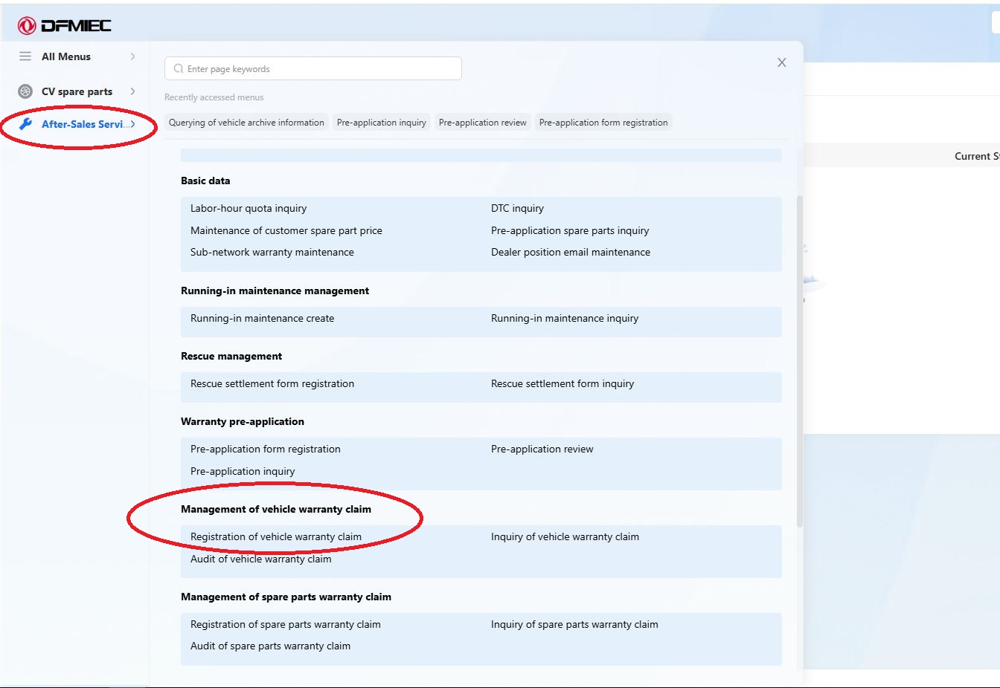
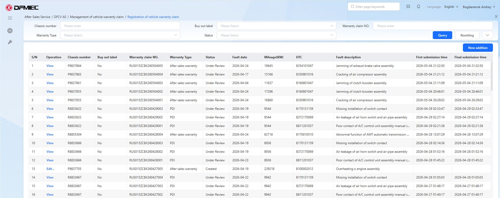
В верхней части окна есть поля отбора для рекламаций находящихся в работе. Можно найти рекламацию по одному или нескольким параметрам.
У рекламаций есть статус, он показывает на каком этапе находится
рассмотрение.
Статусы:
Created - Создана и сохранена
Pending review - Отправлена на рассмотрение
Under
Review - Проверена и одобрена дистрибьютором
Returned -
Возвращено на доработку
Для создания новой рекламации необходимо нажать кнопку New addition
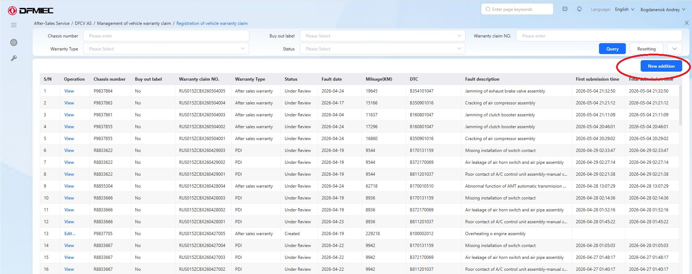
В открывшемся окне необходимо ввести номер шасси автомобиля, найти его кнопкой Query, и выбрать кнопкой Select для продолжения оформления.
Так же тут можно увидеть дату начала гарантии, и дополнительно убедиться что ремонт соответствует гарантийной политике.
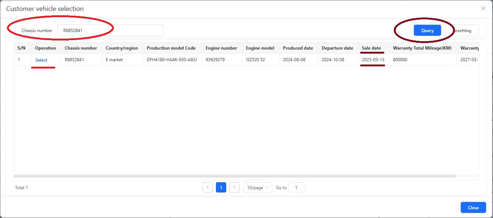
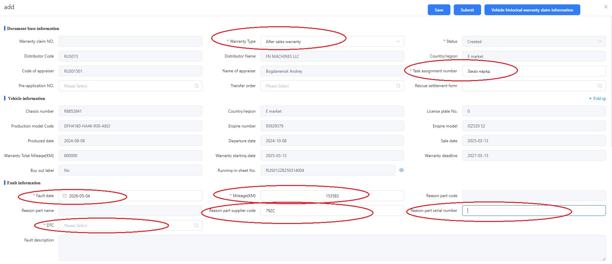
Начинаем с Warranty Type:
PDI - ремонт на
автомобиле ДО продажи, если дефект обнаружен при приеме машины или при
проведении предпродажной подготовки.
After sales warranty -
ремонт на машине в эксплуатации, по жалобе клиента.
Далее Task assignment number - Это номер заказ наряда, он должен быть уникален, по этому рекомендую вносить номер заказ наряда из 1С.
Следующее Fault date - Это дата проведения ремонта, правильно конечно дата поломки, но здесь выбираем именно дату завершения ремонта.
Далее Mileage(KM) - Пробег автомобиля на момент выполнения
ремонта. Пробег берите исключительно с фото приборной панели которое
будете прикладывать.
!Ошибка в пробеге является критической!
Reason part supplier code и Reason part serial number - Код
производителя и серийный номер.
Ссылка на документ Код производителя
детали
Теперь очень важное и немного сложное, DTC - Это код дефекта детали. То есть нужно выбрать из представленных кодов неисправности, максимально точно отражающий поломку.
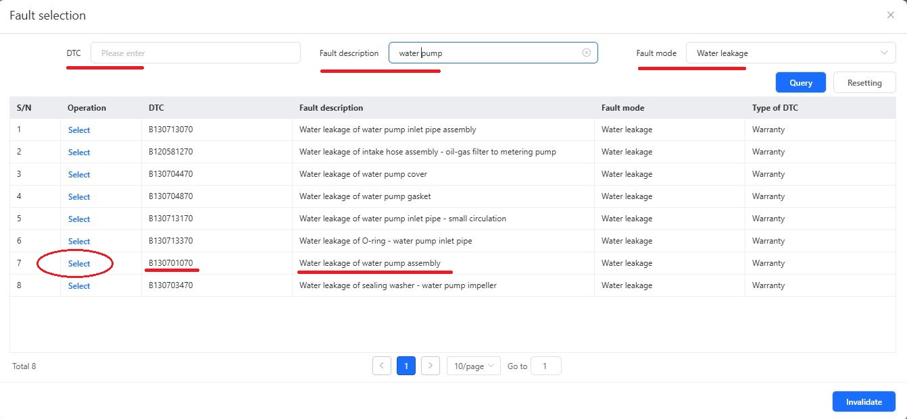
Если вы уже знаете код неисправности, вы можете ввести его в поле DTC.
А если нет, то придется искать его по Fault description - Описанию неисправности. И в помощь Fault mode - сам дефект.
Все заполняется на английском языке. Для облегчения поиска необходимо знать как называется дефектная деталь на английском языке.
На приведенном примере отмечен код при неисправности - “Течь помпы” (утечка охлаждающей жидкости из водяного насоса).
!Если вы пользуетесь браузером Google Chrome, вы можете выделить текст, нажать правую кнопку мыши, и нажать “Перевести выделенный текст на русский”, что позволит проверить точность выбранного вами кода уже на русском языке!
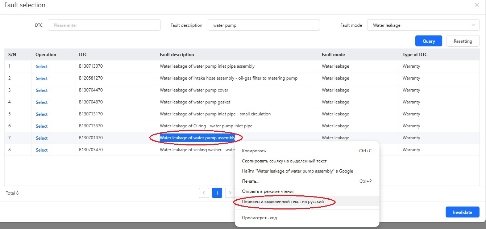
!Старайтесь выбрать как можно более близкий к поломке код, но не всегда это полностью возможно!
Если у нас поломка воздушного компрессора, когда разрушается
пастинчатый клапан, тут вариантов кода может быть несколько:
Это
может быть Breakage of air compressor assembly - Поломка компрессорного
узла
Или Abnormal function of air compressor assembly -
Неисправность в работе компрессорного узла
Или поискать еще более
точный, но в общем, любой из этих кодов отражает поломку.
Переходим ниже, тут нам необходимо заполнить:
Customer
description - Жалоба клиента.
Не нужно “переводить” слова
водителя, пишите как заявлено. “Бухтит движок”, “Бренчит глушак”, “Шипит
снизу”, и так далее.
Cause analysis - Это уже полное
профессиональное описание дефекта.
Чем полнее и объективнее вы
опишете причину поломки, тем быстрее будет принятие рекламации.
Service measures - Выполненные действия для восстановления
автомобиля.
Описывайте действия полностью! Уважайте проверяющих
коллег, пришите не просто - “Замена”, а “Замена воздушного компрессора.
Проверка пневмоситемы”
И в Remark вы можете дополнительно
внести разъяснения, либо что то сообщить о поломке.
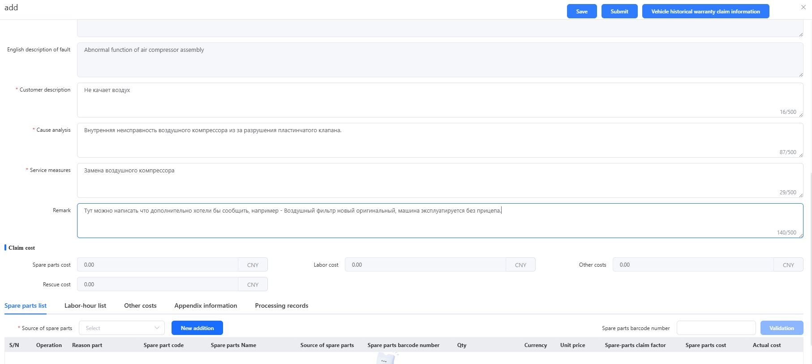
На данный момент существует 2 способа внесения запасных частей для
ремонта:
1. По номеру бар-кода с упаковки запасной части. Правильный
способ.
2. По парт номеру запасной части.
Бар-код это уникальный номер на упаковке с запасной частью. В нем заложены все данные о поступлении запасной части в оборот, по этому для производителя, он самый верный. Так как производитель сразу видит кто ввозил запсную часть, когда, по какой стоимости, и т.д.
Бар-код - это наклейка на фото ниже. Она такая одна на упаковке, и больше этот номер нигде не дублируется.
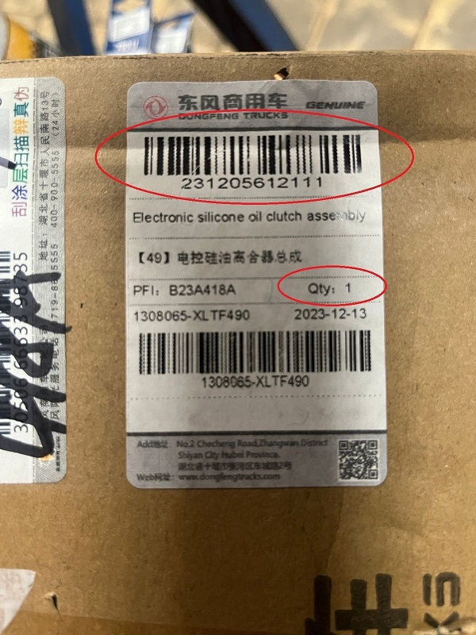
Чтобы добавить деталь в рекламацию, нужно ввести этот номер в поле
Spare parts barcode number и нажать кнопку Validation.
Кнопка Validation будет активна только если вы ввели все 12
символов.
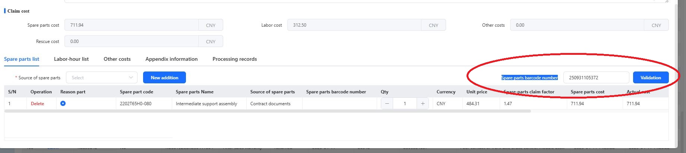
Если код введен верно, и такая позиция еще не использована, появится окошко.
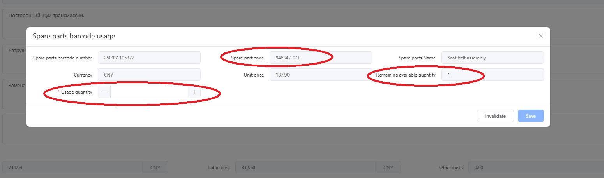
Тут нужно сверить что деталь совпадает с использованой вами, по парт
номеру. И обязательно проставить количество в Usage quantity,
доступное количество деталей в этом бар-коде указано в Remaining
available quantity.
Далее нажимаем кнопку Save, тем самым
добавляя деталь в рекламацию.
Для деталей у которых нет бар-кода допускается их внесение по номеру запасной части. Для такого добавления, в левой части экрана, необходимо из списка выбрать вариант поставки этой детали, и далее нажать кнопку New addition.
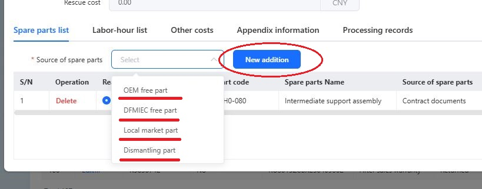
В списке есть 4 варианта поставки детали:
OEM free part -
Это деталь бесплатно предосталенная производителем узла или агрегата,
например Cummins, или Eaton. Соответственно выбирая данный пункт вы
соглашаетесь с тем, что компенсации за деталь не будет.
DFMIEC free part - Это тоже бесплатная деталь, но предосталенная
заводом Dongfeng, или дистрибьютором. Так же не подлежит компенсации.
Local market part - Это оригинальная деталь которую мы купили
на локальном рынке. Этот пункт используется в 99% случаев, но требуется
к рекламации прикрепить документ о покупке.
Dismanting part -
Как следует из названия, это деталь демонтированная(снятая) с другого
автомобиля, обычно нового. Этот пункт используется ТОЛЬКО по
предварительному согласованию с дистрибьютором.
В открывшемся окне вводим номер запасной части в поле Spare part code, нажимаем кнопку Query, тем самым выполняя поиск детали. Проверяем что это нужная нам деталь, видим ее “заводскую” стоимость, и подтверждаем выбор кнопкой Select.
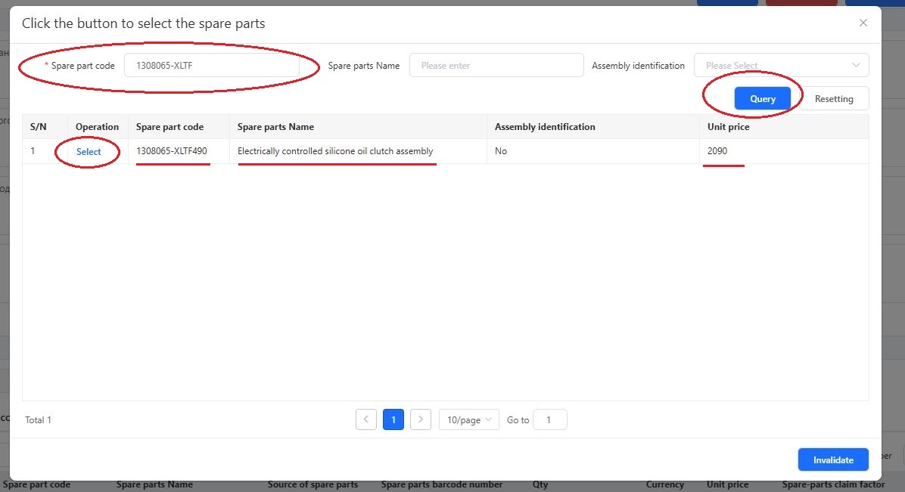
Этими способами вносим в рекламацию все оставшиеся оригинальные детали использованные в ремонте.
Стандартно абсолютно все работы по гарантии для тягачей (GX и KX)
включают в себя и поиск неисправности и замену детали, начинаются эти
работы с Fault diagnosis and replacement of…
А у самосвалов
(КС) работы делятся на диагностику, работы которые начинаются с
Diagnosis of…, и работы по замене детали - Replacement
of….
В рекламацию можно внести только 2 работы по одному ремонту (для самосвалов).
Для добавления работ переходим во вкладку Labor-hour list, и нажимаем добавить New additional.
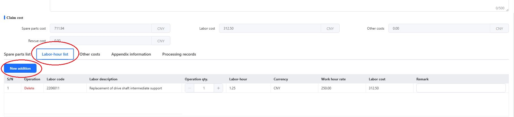
В открывшемся окне, так же как и с добавлением кода дефекта (DTC), есть поиск по коду работы, или по ее названию.
На картинке ниже пример, если вы указываете код дефекта - B350901016 Cracking of air compressor assembly (Поломка воздушного компрессора в сборе), то правильная работа по его замене будет 35090102 Fault diagnosis and replacement of air compressor assembly (Поиск неисправности и замена воздушного компрессора в сборе).
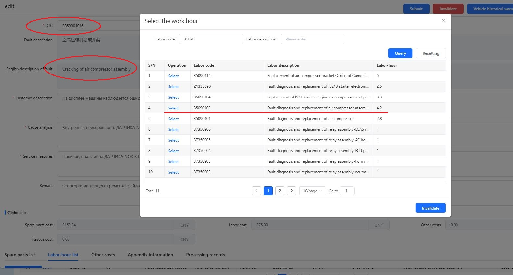
Если у вас двигатель как указано - DDi13 engine, то правильная первая
работа 35090102. Если же другой, ISZ13 или Z14, то работа будет 35090101.
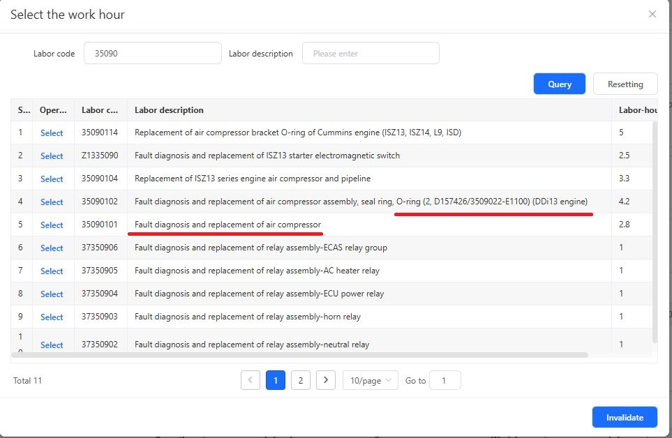
В случае, если для ремонта грузовика использовались неоригинальные детали, технические жидкости или масла, работы выполненные подрядными организациями (эвакуация, услуги мастерских по ремонту узлов, и т.д.), а так же нестандартные ремонтные работы (например, ремонт электропроводки), то такие затраты вносятся во вкладку Other costs.
Для добавления в рекламацию этих работ, материалов или затрат, нужно
нажать кнопку New additional.
Появится строчка в которой
сначала нужно выбрать что это за прочие затраты:
Other -
Самое часто используемое, не уточняющиеся прочие затраты. Сюда
добавляются работы, масла, подрядные затраты, неоригинальные детали.
TR Reward Program - Поощрительная программа. На данный момент
этот пункт не используется.
VOR air freight - Компенсация VOR
авиа доставки запасной части.
Local purchase price
differential - Доплата разницы в цене при покупке оригинальной
детали на локальном рынке. Когда стоимость покупки детали не
перекрывается компенсацией.
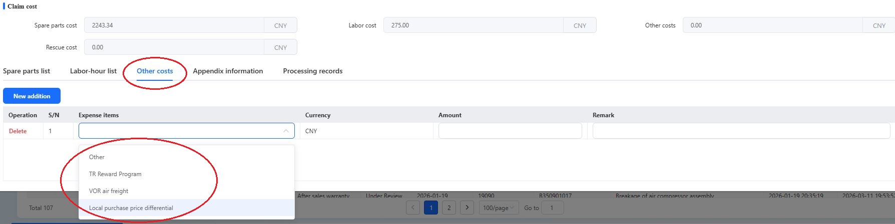
То есть если у вас 5 затрат, 4 из раздела Other(масло и
неоригинальные детали), и разница в стоимости оригинальной детали, вы
создаете только две строчки.
Одну Other, и одну Local purchase price
differential. И уже в Other вносите суммируя масло и детали.
Пример заполнения:
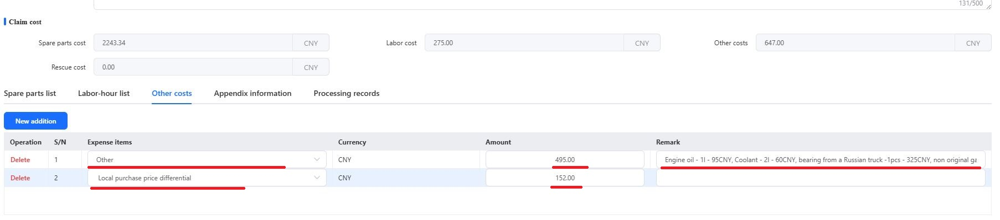
Все в Other нужно добавить поочередно, желательно на английском
языке, с указанием количества и стоимости. Цены в юанях (обозначаются в
CNY или RMB, и то, и то Юань).
Далее сложить указанные стоимости, и
внести в ячейку Amount.
Последнее что нужно сделать для завершения оформления рекламации это добавить фото, видео, и иные материалы которые докажут верное выполенение этого ремонта.
Для этого нужно перейти на вкладку Appendix information. Тут
все интуитивно понятно, нажатием на иконку с плюсом добавляем фото
соответствующее подписи над иконкой.
photo at 45° to the
vehicle - Вид машины под угом 45°
photo of the vehicle
nameplate - Табличка VIN номера
И так далее.
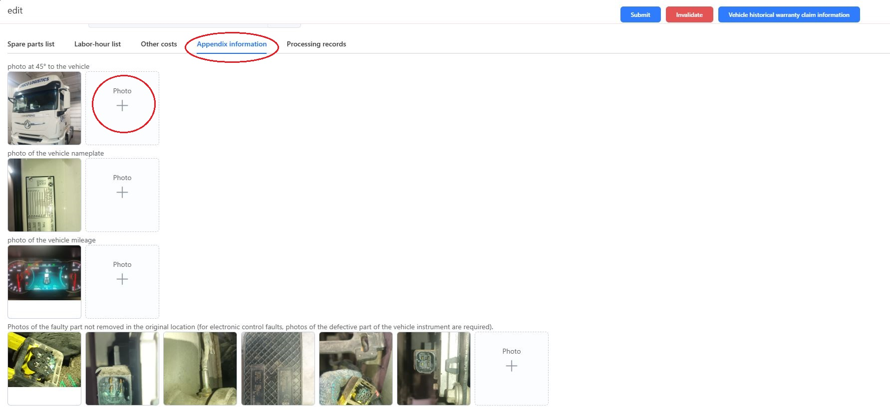
Файлы не являющиеся фотографиями(видео, файлы образа двигателя, документы), можно приложить по кнопке Select files other than image, в самом низу вкладки.